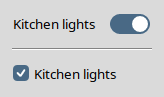

tsw::toggleswitch – Create and manipulate toggle
switch widgetstsw::toggleswitch pathName ?options?
-class -cursor -style
-command command-offvalue value-onvalue value-size
1|2|3-takefocus
0|1|""|command-variable
variablepathName attrib ?name
?value name value ...??pathName cget
optionpathName configure
?option ?value option value ...??pathName hasattrib
namepathName identify
?element? x ypathName instate
stateSpec ?script?pathName state
?stateSpec?pathName stylepathName switchstate
?boolean?pathName togglepathName unsetattrib
nametsw::toggleswitch – Create and manipulate toggle
switch widgetstsw::toggleswitch pathName ?options?
tsw::toggleswitch command creates a new window
named pathName and makes it into a toggleswitch
widget. Additional options, described below, may be specified on the
command line or in the option database to configure aspects of the
toggleswitch widget, such as its size and the Tcl script to execute
whenever the switch state of the widget is toggled. The
tsw::toggleswitch command returns its
pathName argument. At the time this command is
invoked, there must not exist a window named pathName,
but pathName's parent must exist.-size
configuration option, the current theme, the display's scaling level, and
Tk's scaling factor given by [tk scaling]
at the time the first toggleswitch widget is created.space key.switchstate subcommand to change or query
the widget's switch state. By using the -command configuration option, you can specify a
script to execute whenever the widget's switch state gets toggled.
Just like the (ttk::)checkbutton, toggleswitch widgets also support the
-offvalue,
-onvalue, and -variable options.active,
background, disabled,
pressed, and selected) depend on
the current theme. The implementation creates these elements when
needed with the aid of generic procedures for arbitrary themes and
theme-specific ones for a few built-in themes. Applications can add
explicit support for any theme theme by
providing an appropriate command of the name
tsw::createElements_theme.-class -cursor -style
-class option
is Toggleswitch and that of -cursor
an empty string. The value of the -style option
defaults to Toggleswitch2, corresponding to the
-size option's default value
2.| Command-Line Name: | -command |
| Database Name: | command |
| Database Class: | Command |
Specifies a Tcl script to be evaluated at global scope whenever the switch state of the widget is toggled (programmatically, by invoking the
switchstateortogglesubcommand, or interactively). The default is an empty string.
| Command-Line Name: | -offvalue |
| Database Name: | offValue |
| Database Class: | OffValue |
The value to store in the associated variable when the widget's switch state is set to off. Defaults to
0.
| Command-Line Name: | -onvalue |
| Database Name: | onValue |
| Database Class: | OnValue |
The value to store in the associated variable when the widget's switch state is set to on. Defaults to
1.
| Command-Line Name: | -size |
| Database Name: | size |
| Database Class: | Size |
Specifies the size identifier of the toggleswitch widget. The supported values are the strings
1,2(the default), and3. If the current theme isaquathen these size IDs correspond to the control sizes "mini", "small", and "large" of the native toggle switches on macOS. The value1stands for the trough size of 26 x 15 pixels, the value2for the trough size of 32 x 18 pixels, and the value3identifies the trough size of 38 x 22 pixels. For all the other themes, on an unscaled screen the value1stands for the trough size of 32 x 16 pixels, the value2for the trough size of 40 x 20 pixels, and the value3identifies the trough size of 48 x 24 pixels, except that on Windows 10 and earlier, for the themesvista,winnative, andxpnativethe unscaled trough width is 35, 44, and 53 pixels, respectively (for compatibility with the native toggle switch).Note that by setting this option to a value
size, the-styleoption's value will automatically change toToggleswitchsizeif its previous or requested value wasToggleswitch1,Toggleswitch2, orToggleswitch3, and toprefix.Toggleswitchsizeif its previous or requested value wasprefix.Toggleswitch1,prefix.Toggleswitch2, orprefix.Toggleswitch3. Conversely, by setting the-styleoption to a value of the formToggleswitchsizeorprefix.Toggleswitchsize(wheresizeis one of1,2, or3), the-sizeoption will automatically be set tosize. When configuring both options-sizeand-style, the former will take precedence over the latter, regardless of the order in which they were specified.For example, if you create the widget with
tsw::toggleswitch pathName -size 3 -style My.Toggleswitch3or invoke
pathName configure -style My.Toggleswitch3then the
-styleoption will be set toMy.Toggleswitch3(and the-sizeoption will have the value3). On the other hand, if you create the widget withtsw::toggleswitch pathName -style My.Toggleswitch3then the
-styleoption will have the valueMy.Toggleswitch2rather thanMy.Toggleswitch3, because the widget creation triggers the default-size 2setting, which takes precedence over-style My.Toggleswitch3.
| Command-Line Name: | -takefocus |
| Database Name: | takeFocus |
| Database Class: | TakeFocus |
This option determines whether the toggleswitch widget accepts the focus during keyboard traversal. It is almost identical to the standard option of the same name (see the options manual entry for details). The only difference is that not the toggleswitch itself but the ttk::scale widget contained in it will receive the focus during keyboard traversal with the standard keys (
TabandShift-Tab). The default is"ttk::takefocus"(just like for most Tk themed widgets).
| Command-Line Name: | -variable |
| Database Name: | variable |
| Database Class: | Variable |
The name of a global variable whose value is linked to the toggleswitch. The widget's switch state changes to on when this variable is set to the value specified by the
-onvalueoption and to off otherwise. Defaults to the widget's pathname if not specified.Note that, just like in the case of the (ttk::)checkbutton, toggling the widget's switch state by changing the value of this variable will not cause the script specified by the
-commandoption to get executed.
tsw::toggleswitch command creates a new Tcl
command whose name is pathName. This command
may be used to invoke various operations on the widget. It has the
following general form:
pathName option ?arg arg ...?
option and the args determine
the exact behavior of the command. The following commands are
possible for toggleswitch widgets:pathName attrib
?name ?value name value ...??name is specified, the command returns a list of
pairs, each of which contains the name and the value of an attribute
for pathName. If name is
specified with no value, then the command returns
the value of the one named attribute, or an empty string if no
corresponding value exists (you can use the hasattrib subcommand to distinguish this
case from the one that the value of an existing attribute is an
empty string). If one or more
name-value pairs are specified,
then the command sets the given widget attribute(s) to the given
value(s); in this case the return value is an empty string.
name may be an arbitrary string.pathName cget
optionoption, which may have any of the values accepted
by the tsw::toggleswitch command.pathName configure
?option ?value option value
...??option is specified, the command returns a
list describing all of the available options for
pathName (see Tk_ConfigureInfo
for information on the format of this list). If
option is specified with no
value, then the command returns a list describing
the one named option (this list will be identical to the corresponding
sublist of the value returned if no option is
specified). If one or more
option-value pairs are
specified, then the command modifies the given widget option(s) to have
the given value(s); in this case the return value is an empty
string. option may have any of the values
accepted by the tsw::toggleswitch command.pathName hasattrib
name1 if the attribute name
exists and 0 otherwise.pathName identify
?element? x ypathName instate
stateSpec ?script?pathName state
?stateSpec?pathName
stylepathName
switchstate ?boolean?0 is false and anything else is true, or a
string such as true/yes/on or
false/no/off). If the widget's
disabled state flag is set then the command returns
an empty string immediately after checking the argument.
Otherwise, if the argument is true then the command sets the widget's
switch state to on by setting the underlying ttk::scale widget's
selected flag, moving the slider to the end of the
trough, and setting the associated variable to
the value specified by the -onvalue option; if the argument is false
then the command sets the widget's switch state to off by clearing the
selected flag, moving the slider to the beginning
of the trough, and setting the associated variable to the value
specified by the -offvalue
option.-command option is a
nonempty string then the command evaluates that script at global scope
and returns its result; otherwise the return value is an empty
string.0 (off) or
1 (on). When a toggleswitch widget is created, its
switch state is initialized with 0.pathName
toggleswitchstate command with
the argument 0 if the current switch state is on and with
the argument 1 otherwise.pathName
unsetattrib namename. Returns an
empty string.aqua:
space key causes its switch state to get toggled.aqua:
space key causes its switch state to get toggled.disabled state flag is
set then none of the above actions occur.selected state whenever the
switch state changes to on and clears it otherwise. The default
bindings set and clear the active and
pressed state flags.tsw::toggleswitch is
Toggleswitch.active,
background, disabled,
pressed, selected.Toggleswitch1, Toggleswitch2, and
Toggleswitch3 styling options configurable with
ttk::style are:
-focuscolor color- The default is theme-specific.
-focussolid boolean- Defaults to true for the
classictheme and false for all the others. This option was introduced in Tk 8.6.15; in earlier Tk versions it has no effect.-focusthickness amount- The default is
1. The value may have any of the forms acceptable toTk_GetPixels.-padding padding- Defaults to
1.5pfor theaquatheme (for which the three above-mentioned styles have nofocuselement) and0.75pfor all the other themes.
aqua theme only the
-padding option is available, the others are simply
ignored.This section is based on the Microsoft Learn article Toggle switches.
For some actions, either a toggleswitch or a checkbutton might work. To decide which control would work better, follow these tips:
In the following example, for turning the kitchen lights on, you should use a toggleswitch rather than a checkbutton.
